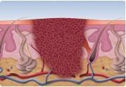
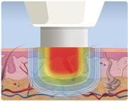
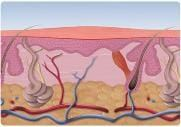

Swift Microwave Therapy
 Are you fed up with painful and unsightly verrucas?
Are you fed up with painful and unsightly verrucas?
Ashamed to take off your footwear and show your feet?
We have invested in Swift microwave therapy for the treatment of verrucae and warts. It is a new treatment designed to use microwaves which heat up the infected tissue, break the barrier around the verrucae and allow the body’s immune system to fight off the viral infection.
The beauty of this verruca treatment is that it is quick, no dressings or after care are needed between appointments and there is only a second of pain during treatment, we work hard to distract you at this moment. It is important to remember that it can take several months for the body’s immune system to help clear the verrucae with this treatment.
Initially a course of three Swift treatments at 4-6 week intervals is required, with follow up appointments at 3-6 months.
This is an all-inclusive package for the Swift verruca treatment available following assessment by Jo or Jane to see if Swift therapy would be the best treatment for you.



This video shows how the treatment works:
[scriptless]